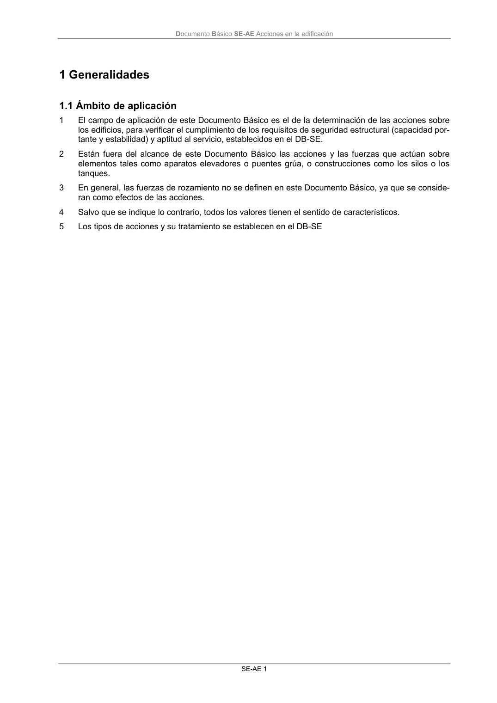

DB-SE-AE Acciones en la edificación · edición 2009-04 · capa oficial
Documento DB-SE-AE-oficial · SHA-256 del PDF 26116e5088955f0c6963a6187270cad282e1e7bf5a53a90f695c8fa50b4e4487
Página física 5 de 46.
Copia fiel del PDF fuente · Fuente oficial
Ficha de la disposición en la fuente oficial
Formato: Texto de la página (Markdown)
Documento Básico SE-AE Acciones en la edificación SE-AE 1 1 Generalidades 1.1 Ámbito de aplicación 1 El campo de aplicación de este Documento Básico es el de la determinación de las acciones sobre los edificios, para verificar el cumplimiento de los requisitos de seguridad estructural (capacidad por- tante y estabilidad) y aptitud al servicio, establecidos en el DB-SE. 2 Están fuera del alcance de este Documento Básico las acciones y las fuerzas que actúan sobre elementos tales como aparatos elevadores o puentes grúa, o construcciones como los silos o los tanques. 3 En general, las fuerzas de rozamiento no se definen en este Documento Básico, ya que se conside- ran como efectos de las acciones. 4 Salvo que se indique lo contrario, todos los valores tienen el sentido de característicos. 5 Los tipos de acciones y su tratamiento se establecen en el DB-SE
